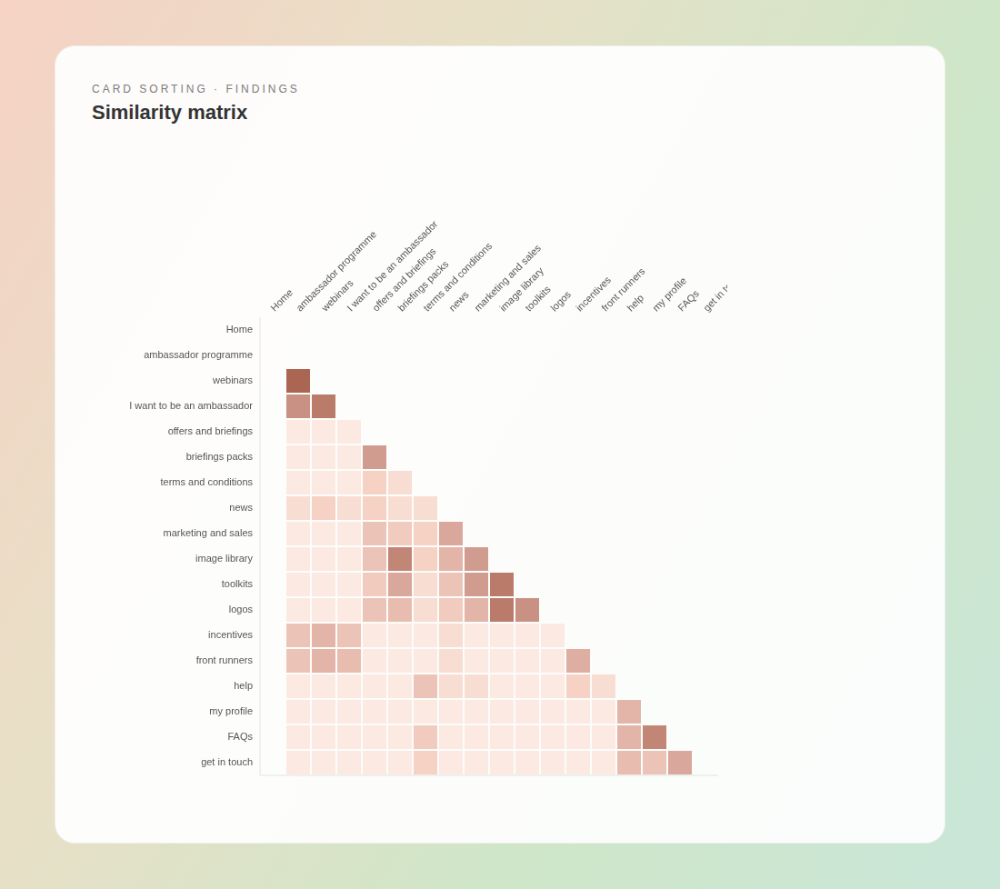
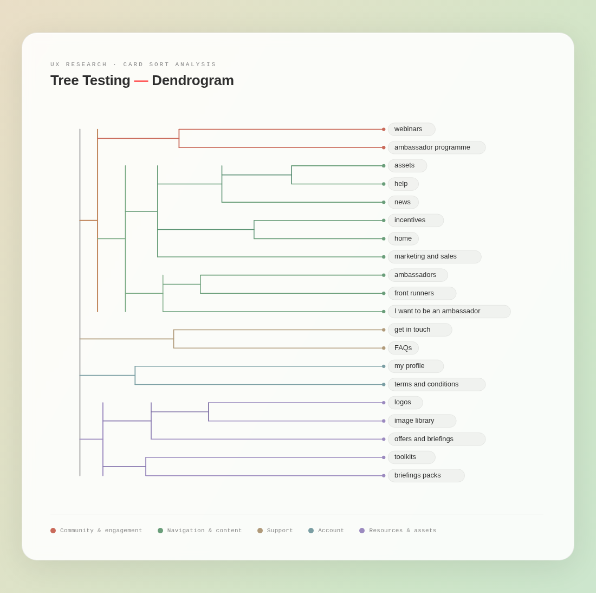
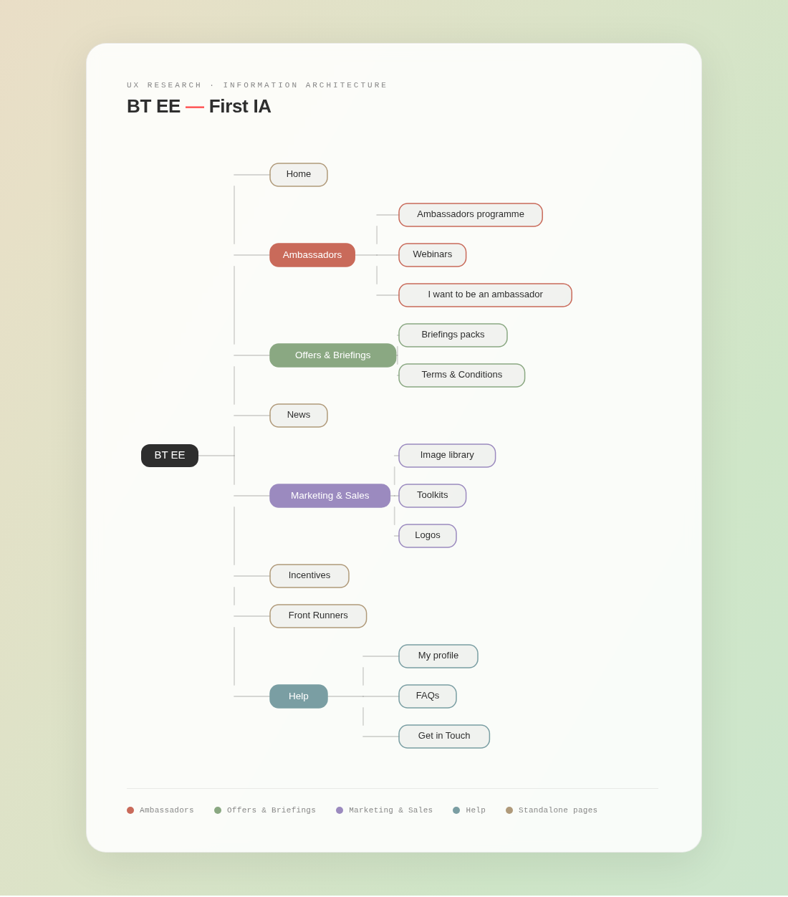
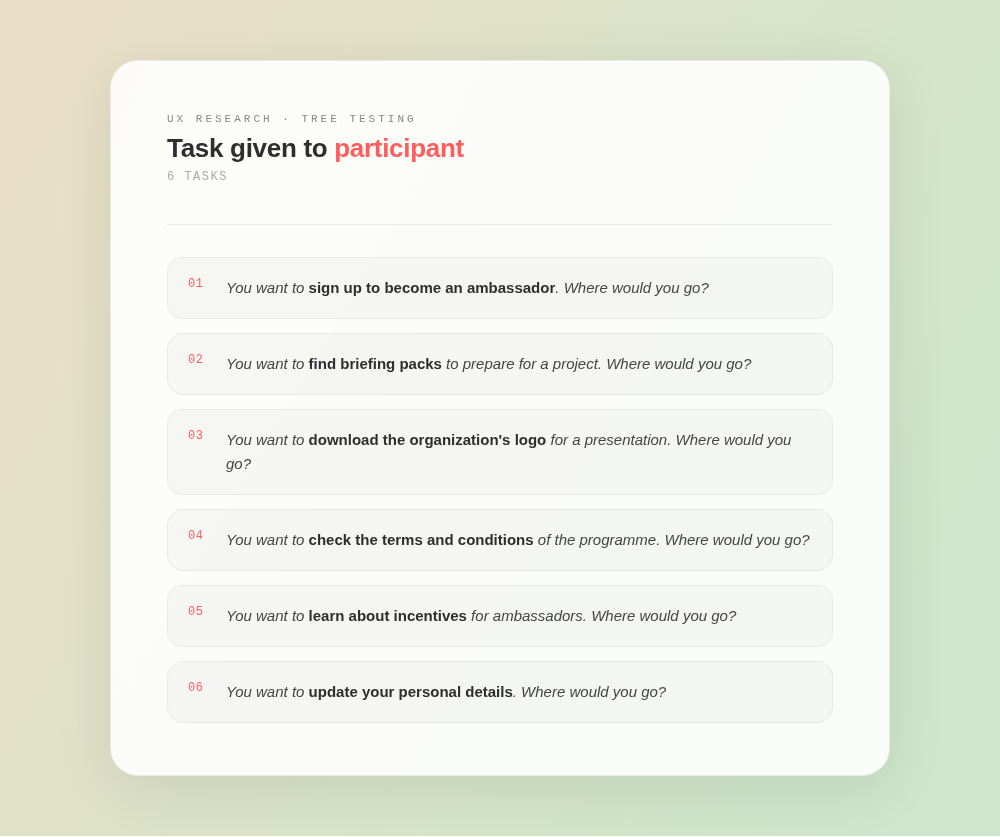
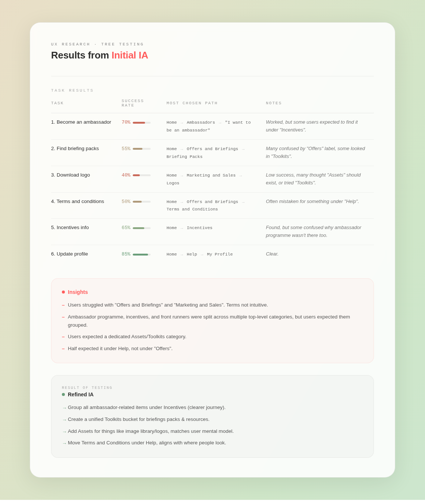
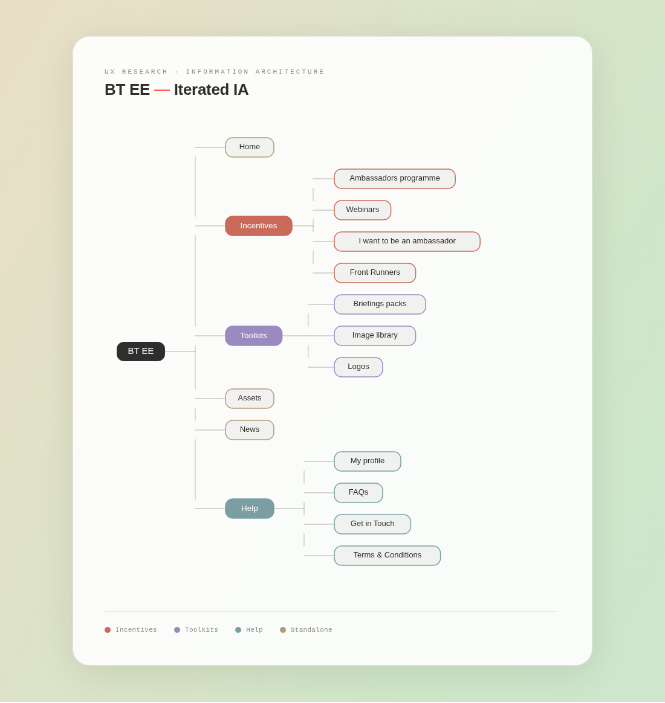

Information Architecture redesign for BT EE partner portal
Redesigning the IA of a unified PRM to simplify navigation, reduce content duplication, and improve partner findability across BT and EE.

- +32% Navigation success rate
- −27% Duplication in content
- 4.4/5 User clarity score
Overview
BT EE manages two core business areas — BT and EE — each with its own Partner Relationship Management (PRM) system. This dual structure created significant inefficiencies: duplicated content, outdated information, and a fragmented user experience for partners navigating across both platforms.
To resolve this, the company decided to merge both PRMs into a single unified platform. Defining a clear information architecture was a critical step in this redesign. The objective was to reduce duplication, simplify navigation, and deliver a structure that would serve both internal teams and external partners efficiently.
My role
I led the end-to-end UX research process as the sole researcher on this project. My responsibilities covered scoping objectives, designing the research methodology, recruiting participants, executing card sorting and tree testing sessions, analysing findings, and translating insights into a validated information architecture and specification document.
I also acted as the bridge between the product team, stakeholders, and the development team — facilitating a dedicated workshop to align on the final IA and ensure it was technically feasible.
Methods
Card sorting
To validate whether the existing content organisation and labelling made sense to users, I applied the card sorting method using Optimal Workshop. I chose an open, remote, unmoderated card sort to allow participants to freely group and name categories without constraints. The first round included 30 cards and 10 participants drawn from the partner community.
After running the card sort, I analysed the similarity matrix and dendrogram to identify natural groupings in how users mentally organised the content. These patterns revealed which items users consistently grouped together and which labels caused confusion.
Similarity matrix
The similarity matrix showed how frequently participants grouped each pair of items together. Darker cells indicate stronger associations. Key clusters emerged around ambassador-related content, assets and toolkits, and help and account management.

Dendrogram
The dendrogram visualised the hierarchical clustering of content items based on how participants grouped them. It confirmed that users naturally separated functional tools (toolkits, logos, image library) from programme information (ambassador, incentives, front runners), and from support content (help, FAQs, get in touch).

Initial information architecture
Based on the card sort findings, I proposed an initial information architecture for the unified PRM. The structure was designed to reflect users' mental models, grouping related content under intuitive top-level categories and reducing the cognitive load required to navigate the platform.

Tree testing
With the initial IA defined, I validated it through a tree testing study using Optimal Workshop. Tree testing measures how easily users can locate specific information within a proposed navigation structure, without the influence of visual design. Participants were given six realistic tasks and asked to navigate the tree to find the correct location.
Tree testing tasks

Tree testing results
The results highlighted both strengths and areas for improvement in the initial IA. While some tasks performed well, others revealed persistent labelling confusion and structural issues that needed addressing before moving to design.

Key insights from tree testing
- Users struggled with the labels "Offers and Briefings" and "Marketing and Sales" — the terms were not intuitive to participants.
- Ambassador programme, incentives, and front runners were split across multiple top-level categories, but users expected them grouped together.
- Users expected a dedicated Assets / Toolkits category rather than having these items buried under Marketing and Sales.
- Half of participants expected Terms & Conditions to be under Help, not under Offers.
IA iteration
Based on the tree testing insights, I iterated the information architecture. The refined structure grouped ambassador-related items under Incentives, created a unified Toolkits section for briefing packs and resources, introduced a dedicated Assets category, and moved Terms & Conditions to Help — aligning with user expectations.

Wireframes
To bring the validated architecture to life, I created wireframes for both desktop and mobile views. The wireframes translated the structural decisions from the IA into tangible layouts, demonstrating content hierarchy, navigation patterns, and key interaction points across the platform.
The Costa Foundation homepage below illustrates how the new structure was applied — with clear top-level navigation, prominent calls to action, and a content layout aligned with user expectations identified during research.

Developer handoff & specification document
Following the wireframe phase, I facilitated a dedicated workshop with the development team to walk through the final IA and wireframes. I then produced a comprehensive specification document outlining:
- Content organisation and navigation structure
- Interaction patterns and user flows
- Design considerations and accessibility requirements
- Technical features required to implement the final PRM
This document served as the single source of truth for the development team throughout the build phase, ensuring the research insights were faithfully implemented.
Outcomes & impact
The redesigned information architecture delivered measurable improvements across findability, content quality, and user satisfaction — validating the research-led approach taken throughout the project.
Findability & navigation
- Task completion improvement68% faster than original PRM
- Logo findability40% → 92% success rate
- Navigation success rate+32% overall
Content quality
- Content redundancy reduced45% — 50+ duplicate entries removed
- Duplication in content−27% overall
User satisfaction
- Partner satisfaction score3.2 → 4.4 out of 5
- User clarity score4.4 / 5 post-launch
Structural improvements
- Ambassador journey unified under Incentives, reducing navigation confusion.
- Terms & Conditions relocated to Help, matching user mental models.
- Assets and Toolkits consolidated into a single, clearly labelled section.
- Higher partner traffic and engagement observed on the platform after launch.